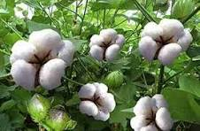
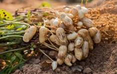
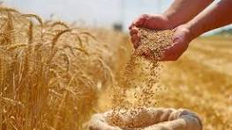
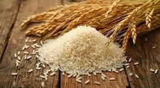
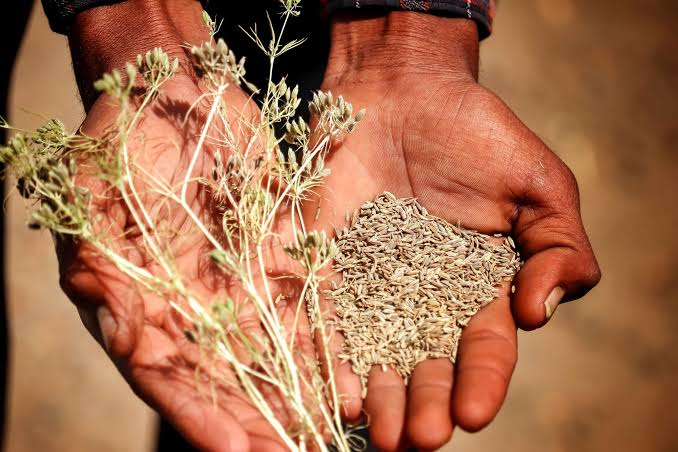
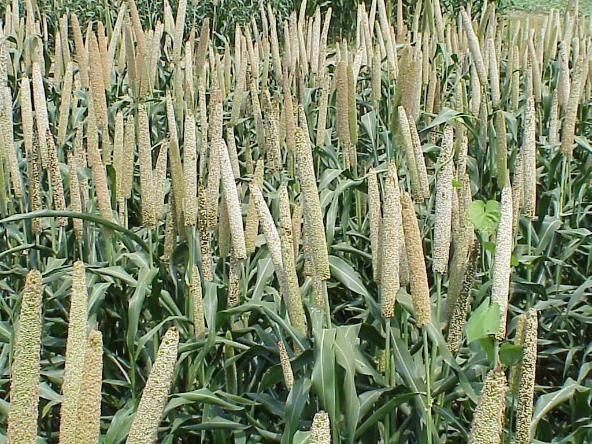
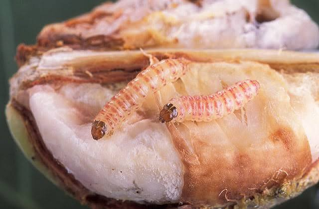
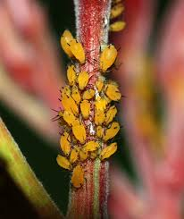
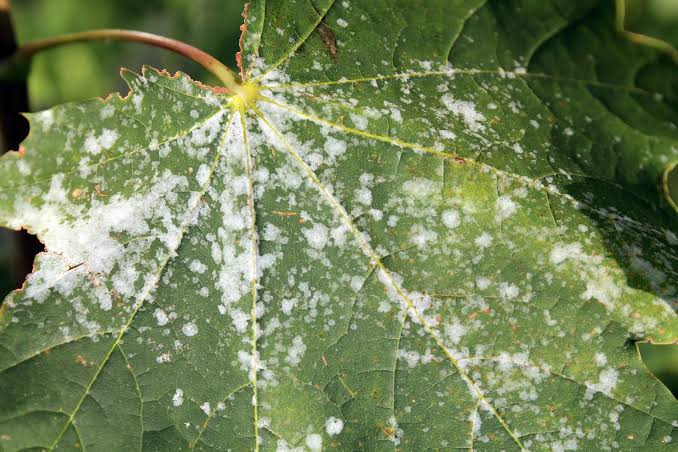

Kharif • Cash Crop
Cotton (કપાસ / Kapas)
The cornerstone of Gujarat's farming economy. Learn optimal spacing, sucking pest thresholds, bollworm IPM, and defoliation guidelines.
Empowering farmers with practical, scientifically grounded crop schedules, authentic pest identification, label-approved pesticide safety, and direct links to official government assistance schemes.
Detailed agronomic practices tailored for Western and Central Indian agro-climatic zones, focusing on Gujarat's agricultural heartlands.

The cornerstone of Gujarat's farming economy. Learn optimal spacing, sucking pest thresholds, bollworm IPM, and defoliation guidelines.

Vital edible oilseed crop of Rajkot, Junagadh, and Amreli. Key management includes seed treatment, gypsum application, and Tikka leaf spot control.

Winter cereal cultivated widely in Ahmedabad, Mehsana, and Bhal tract (renowned for drought-hardy Daudkhani wheat varieties).

High-water staple across Kheda, Anand, and Navsari. Includes system of rice intensification (SRI), zinc application, and blast prevention.

Premium export spice centered around Unjha and Surendranagar. Extreme sensitivity to cloudy weather, powdery mildew, and blight requires vigilant IPM.

Highly nutritious, drought-resilient super grain cultivated widely in Banaskantha and Kutch. Excellent climate adaptation and minimal inputs.
Timed field activities organized by Indian crop seasons. Timely execution of tillage, seed treatment, and fertilizer placement directly impacts net yield.
Recommended for Gujarat, Rajasthan, and Western MP belts.
Always treat wheat seed with Carboxin + Thiram (2g/kg) and cumin seed with Trichoderma viride (10g/kg) against seed-borne wilt and flag smut.
First irrigation in wheat must strictly occur 20-25 days after sowing at CRI stage. Missing this irrigation permanently restricts tillering capacity.
Inspect umbels during December cool spells. Prophylactic dusting of 300-mesh sulfur powder (25 kg/ha) prevents catastrophic crop loss.
Accurate symptom recognition prevents unneeded chemical sprays. Always corroborate visual symptoms with agricultural officers before applying systemic compounds.

Larvae enter young squares and bolls, plugging entry holes with frass. Causes rosette flowers, boll rotting, and stained unmarketable lint.

Colonies cluster under leaves and on young inflorescences, sucking vital sap. Secretes sticky honeydew attracting black sooty mold fungus.

White talcum powder-like mycelial patches emerge on leaves, stems, and flower umbels. Leads to seed shriveling and near-total crop loss in cumin.
Official information referenced from Central Insecticide Board & Registration Committee (CIBRC) labels. Adhere to statutory safety intervals.
Never spray without complete Personal Protective Equipment (gloves, eye goggles, N95 respiratory mask, full boots). Always follow the registered container label approved by the CIBRC. Keep all agro-chemicals securely locked away from children, livestock, and open water bodies. Dosage depends strictly on crop stage, spray volume, and variety.
Botanical Anti-feedant & Oviposition Deterrent
Ideal for sucking pest suppression (aphids, whiteflies, thrips) and early caterpillar instars. Harmless to predatory honeybees and beneficial spiders.
Neonicotinoid Systemic Compound
Label registered for severe sucking pest outbreaks in cotton and paddy. Translocates acropetally through plant xylem tissues.
Dithiocarbamate Multi-Site Inhibitor
Reliable preventive contact fungicide protecting against Tikka leaf spot in groundnut, early blight, and downy mildew across multiple crops.
Resource-efficient methodologies designed to lower farmer input costs, conserve groundwater, and restore biological soil fertility.
Saves up to 60% irrigation water in row crops like cotton and groundnut while enabling precision fertilizer application via venturi fertigation.
Step-by-Step →Scientific zig-zag V-shape field sampling ensures farmers apply only required NPK and micronutrients, curbing expensive fertilizer overuse.
Sampling Guide →Alternating deep-rooted cotton with shallow-rooted groundnut or pulses breaks pest cycles and naturally fixes biological atmospheric nitrogen.
Rotation Cycles →Recycling farm biomass and cow dung using Eisenia fetida earthworms to generate nutrient-rich black compost in 45-60 days.
Bed Setup →Verified official programs from the Ministry of Agriculture & Farmers Welfare and Gujarat State Department. No third-party intermediaries.
Direct income support of ₹6,000 per year transferred directly to Aadhaar-linked bank accounts of landholder farmer families in 3 installments of ₹2,000.
Comprehensive insurance protection against non-preventable natural calamities (drought, flood, unseasonal hail). 2% Kharif premium, 1.5% Rabi premium.
Single unified web portal by the Government of Gujarat for agricultural equipment subsidies, micro-irrigation (GGRC) grants, certified seeds, and water pumps.
In-depth advisories on soil nutrition, water preservation, and seasonal post-harvest safety.

A step-by-step checklist on summer deep tilling, decomposed FYM incorporation, and certified seed procurement prior to monsoon arrival.

Routine acid treatment protocols and sand filter backwashing practices to keep drip laterals unclogged in high TDS Saurashtra borewells.

Target moisture percentages (under 10% for wheat, 8% for cumin) and hermetic storage bags to eliminate storage weevil attacks without hazardous fumigants.
Get verified alerts on seasonal pest emergence thresholds, irrigation timing, and newly announced state subsidy windows directly in your inbox.
🔒 Educational client-side demonstration: We respect farmer privacy. No spam, and no personal data is transmitted without backend integration.